Knowledge Book · Business Edition
Компьютерное зрение: вводное руководство для бизнеса
Понятное руководство для сотрудников без технического бэкграунда
Содержание
- 1Введение: зачем бизнесу компьютерное зрение
- 2Что такое компьютерное зрение
- 3Как машина «видит»: от пикселей к смыслу
- 4Основные задачи компьютерного зрения
- 5Как устроена система компьютерного зрения
- 6Данные, обучение и точность
- 7Ограничения, риски и реалистичные ожидания
- 8Компьютерное зрение в промышленности
- 9Офисы и корпоративные пространства
- 10Улица, город и инфраструктура
- 11Розничная торговля и e-commerce
- 12Медицина и здравоохранение
- 13Транспорт и логистика
- 14Безопасность и видеонаблюдение
- 15Сельское хозяйство и AgriTech
- 16Как внедрить CV в компании: дорожная карта
- 17Этика, приватность и ответственное использование
- 18Будущее компьютерного зрения
- 19Глоссарий: термины простым языком
- 20Чек-лист для руководителя и итоги
Введение: зачем бизнесу компьютерное зрение
Простыми словами: компьютерное зрение — это когда камера и «умная программа» вместе делают то, что раньше мог только человек: смотреть на картинку и понимать, что на ней происходит.
Что вы получите от этого руководства
Это руководство написано для сотрудников без технического бэкграунда: менеджеров, HR, закупок, операционных директоров, специалистов по безопасности, маркетинга и всех, кто слышит термины «компьютерное зрение», «нейросеть» и «детекция объектов», но хочет понять смысл, а не формулы.
После прочтения вы сможете:
- объяснить коллегам, что такое компьютерное зрение простым языком;
- назвать основные задачи и типичные сценарии применения;
- оценить, где в вашей компании CV может принести пользу;
- задавать правильные вопросы IT-подрядчикам и внутренним командам;
- понимать ограничения, риски и этические аспекты.
Почему тема актуальна именно сейчас
Три фактора сделали компьютерное зрение массовой бизнес-технологией:
- Камеры везде — смартфоны, IP-камеры, промышленные сенсоры, дроны. Видеопоток стал дешёвым источником данных.
- Мощные модели ИИ — современные алгоритмы распознают объекты, текст и сцены с точностью, достаточной для реальных процессов.
- Облако и edge-устройства — можно запускать CV как в дата-центре, так и прямо на камере или контроллере на производстве.
По данным отраслевых обзоров 2024–2026 годов, компьютерное зрение входит в топ-5 прикладных направлений ИИ в промышленности, ритейле, логистике и «умных городах». Компании, которые понимают базовые принципы, быстрее находят точки ROI и избегают дорогих ошибок при внедрении.
Как устроена книга
Мы идём от общего к частному:
- сначала — что это и как работает (без математики);
- затем — какие задачи решает CV;
- далее — отрасли и сценарии: завод, офис, улица, магазин, медицина, логистика;
- в конце — как внедрять, риски, глоссарий и чек-лист для руководителя.
К каждой главе прилагаются иллюстрации — схемы и «картинки-смыслы», которые можно показывать на совещаниях.
Для кого не предназначено это руководство
Если вам нужно программировать модели, разбирать архитектуры ResNet или ViT, считать loss-функции — обратитесь к техническим разделам Knowledge Book (Computer Vision, Object Detection, Transformers). Здесь мы сознательно не углубляемся в код и формулы.
Как читать
- За один раз — 1–2 главы (15–20 минут).
- Выборочно — перейдите к главе про вашу отрасль (промышленность, офис, улица и т.д.).
- Для презентации — используйте иллюстрации из HTML-версии как слайды.
Давайте начнём с самого главного вопроса: что вообще такое компьютерное зрение?
Что такое компьютерное зрение
Простыми словами: это способ научить компьютер «смотреть» на фото или видео и отвечать на вопросы вроде «что это?», «где это?», «всё ли в порядке?».
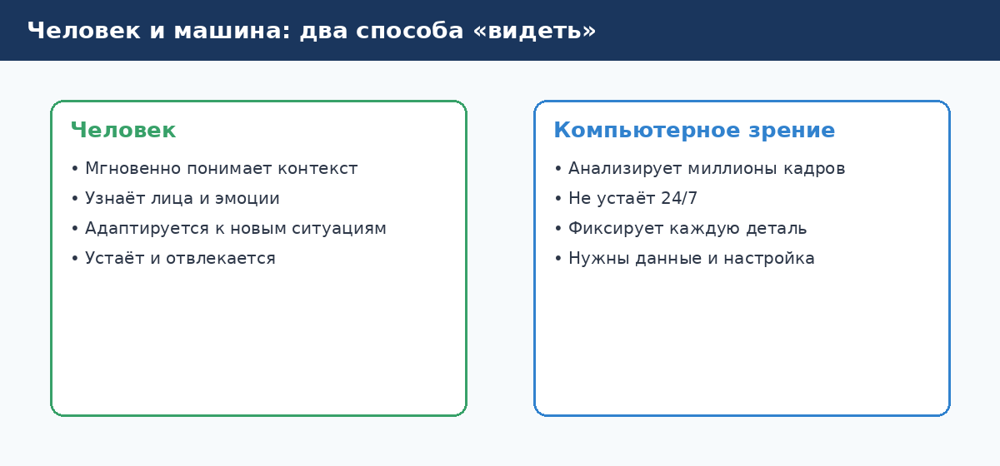
Определение без жаргона
Компьютерное зрение (Computer Vision, CV) — область искусственного интеллекта, которая автоматически извлекает смысл из изображений и видео.
Вход: картинка (один кадр или поток кадров).
Выход: решение — метка класса, координаты объекта, маска области, текст, сигнал тревоги, команда роботу.
Примеры решений:
- «На конвейере обнаружена царапина на детали» → отбраковка;
- «Сотрудник без каски в опасной зоне» → предупреждение;
- «На полке закончился товар X» → задача на пополнение;
- «Номер автомобиля: А123БВ777» → открытие шлагбаума.
Чем CV отличается от обычного видеонаблюдения
| Обычная камера + человек-оператор | Компьютерное зрение |
|---|---|
| Человек смотрит монитор | Алгоритм анализирует каждый кадр |
| Устаёт, пропускает события | Работает 24/7 с заданной частотой |
| Субъективная оценка | Измеримая точность (метрики) |
| Масштабируется только наймом людей | Один алгоритм — много камер |
CV не заменяет камеру — оно добавляет интelligence к уже существующему видеопотоку или фото.
Где CV уже есть в повседневной жизни
Скорее всего, вы уже пользуетесь CV, даже не задумываясь:
- Разблокировка телефона по лицу — распознавание и проверка «живости»;
- Фильтры в соцсетях — детекция лица и ключевых точек;
- Сканер QR и перевод текста с фото — детекция + OCR;
- Автопилот и парктроники — детекция машин, пешеходов, разметки;
- Сортировка посылок на складах — чтение штрих-кодов и распознавание форм.
Для бизнеса логика та же: камера → понимание сцены → действие в процессе.
Связь с другими технологиями
Компьютерное зрение часто идёт в связке:
- IoT и датчики — температура + картинка дефекта;
- ERP / MES / WMS — сигнал CV попадает в учётную систему;
- Робототехника — «глаза» для манипуляторов и AGV;
- Большие языковые модели (LLM) — описание сцены текстом, ответы на вопросы по видео.
Важно: CV — это не магия. Качество зависит от данных, условий съёмки и постановки задачи. Об этом — в следующих главах.
Типичные заблуждения
- «CV видит как человек» — нет, модель видит паттерны в пикселях, обученные на примерах. Необычный ракурс или освещение могут сбить систему.
- «Достаточно купить готовую программу» — часто нужна адаптация под ваши камеры, объекты и правила.
- «100% точность» — на практике всегда есть компромисс между пропусками ошибок и ложными тревогами. Это управляется порогами и процессом.
Краткий итог
Компьютерное зрение превращает изображения в решения. Для бизнеса это способ автоматизировать контроль, учёт, безопасность и качество там, где раньше требовался непрерывный человеческий взгляд.
Как машина «видит»: от пикселей к смыслу
Простыми словами: камера записывает миллионы маленьких цветных точек — пикселей. Программа ищет в них знакомые узоры и на их основе делает вывод.
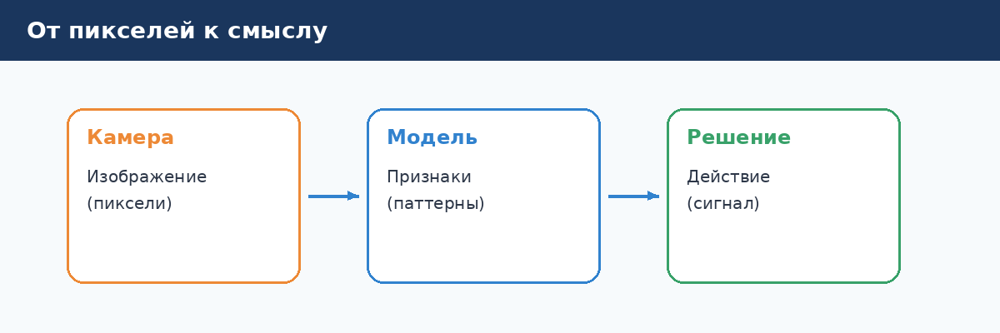
Шаг 1: Камера создаёт изображение
Любое цифровое фото — это таблица пикселей. У каждого пикселя есть цвет (обычно три числа: красный, зелёный, синий — RGB).
Разрешение 1920×1080 означает около 2 миллионов пикселей на один кадр. Видео — это 25–60 таких кадров в секунду. Объём данных огромный, поэтому перед анализом изображение часто сжимают и обрезают до нужной области.
Бизнес-вывод: качество камеры (разрешение, объектив, подсветка, фиксация) напрямую влияет на качество CV. Экономия на камере часто оборачивается дорогой доработкой алгоритма.
Шаг 2: Предобработка
Перед «умной» частью картинку готовят:
- выравнивают яркость и контраст;
- убирают шум;
- выделяют зону интереса (например, только конвейер, а не весь цех);
- иногда меняют размер для ускорения.
Это как подготовить документ перед чтением: хороший свет, ровный стол, нужная страница.
Шаг 3: Модель извлекает признаки
Модель (нейросеть или классический алгоритм) получает подготовленное изображение и строит внутреннее представление — набор признаков:
- есть ли на изображении круглые формы;
- похож ли фрагмент на известный дефект;
- где границы объектов.
Современные модели обучаются на тысячах и миллионах примеров, поэтому «узнают» объекты даже при частичном перекрытии или другом освещении — в пределах того, что видели при обучении.
Шаг 4: Решение и действие
На выходе модель выдаёт, например:
- класс — «дефект / норма»;
- уверенность — «на 94% это царапина»;
- координаты рамки вокруг объекта;
- маску — какие именно пиксели принадлежат объекту.
Дальше бизнес-логика решает: остановить линию, отправить уведомление, записать в журнал, открыть ворота.
Аналогия для совещания
Представьте опытного инспектора на заводе:
- Смотрит на деталь (камера).
- Привыкает к освещению и фокусируется на нужной зоне (предобработка).
- Сравнивает с памятью о тысячах прошлых деталей (модель).
- Ставит штамп «годен / брак» (решение).
CV автоматизирует шаги 1–4, если вы правильно описали, что считать «браком».
Что важно знать нетехническому руководителю
| Вопрос | Почему важен |
|---|---|
| Где стоит камера? | Ракурс определяет, видит ли модель нужный объект |
| Какое освещение? | Тени и блики — частая причина ошибок |
| Что считать успехом? | Без KPI (доля брака, время реакции) проект «висит» |
| Есть ли примеры «плохих» случаев? | Модель должна видеть и норму, и отклонения |
Краткий итог
Машина не «понимает» мир как человек — она находит статистические закономерности в пикселях. Чем лучше подготовлены данные и условия съёмки, тем надёжнее решения для бизнеса.
Основные задачи компьютерного зрения
Простыми словами: у CV есть несколько «умений» — как у человека: назвать предмет, указать пальцем, обвести контур, прочитать надпись, проследить за движением.
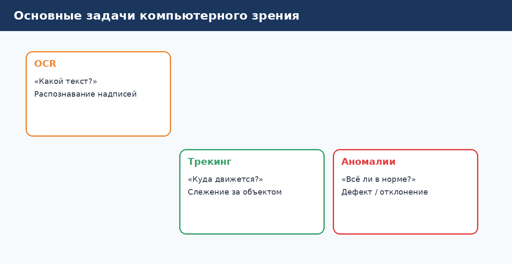
1. Классификация изображений
Вопрос: «Что на картинке в целом?»
Пример: фото продукта → «яблоко» / «апельсин» / «брак упаковки».
Бизнес: сортировка, входной контроль, модерация контента.
Ограничение: одна метка на всё изображение; если объектов несколько, нужна детекция.
2. Детекция объектов (Object Detection)
Вопрос: «Что и где?»
Пример: на кадре со склада — три паллеты, две тележки, один человек; вокруг каждого рамка и подпись.
Бизнес: подсчёт людей, контроль СИЗ (каски, жилеты), retail analytics.
3. Сегментация
Вопрос: «Какие именно пиксели принадлежат объекту?»
Пример: контур дефекта на металле, область пролива на полу, силуэт человека.
Бизнес: точный контроль качества, измерение площади, роботы «берут» объект по форме.
4. Распознавание текста (OCR)
Вопрос: «Какой текст на изображении?»
Пример: номер накладной, VIN на детали, ценник на полке, показания прибора.
Бизнес: документооборот, логистика, inventory без ручного ввода.
5. Трекинг (отслеживание)
Вопрос: «Куда движется объект между кадрами?»
Пример: один и тот же человек прошёл через три камеры; машина на парковке заняла место №12.
Бизнес: безопасность, аналитика траекторий, спорт, транспорт.
6. Поиск аномалий
Вопрос: «Всё ли как обычно?»
Пример: на линии всегда была ровная поверхность — появилось пятно; в переговорной пусто 3 часа в рабочий день.
Бизнес: predictive quality, мониторинг оборудования, умный офис.
7. Оценка позы и действий
Вопрос: «Что делает человек или механизм?»
Пример: падение, драка, поднятие тяжести неправильной осанкой, операция «закручивание болта».
Бизнес: охрана труда, спорт, контроль операций.
Как выбрать задачу для вашего кейса
| Бизнес-вопрос | Типичная задача CV |
|---|---|
| «Это бракованная деталь?» | Классификация или детекция дефекта |
| «Сколько людей в зале?» | Детекция + подсчёт |
| «Где именно трещина?» | Сегментация |
| «Какой номер на машине?» | OCR + детекция номера |
| «Кто прошёл через турникет?» | Распознавание лиц + трекинг |
Комбинации задач
В реальных проектах задачи сочетаются:
- детекция номера → OCR символов → проверка по базе;
- детекция человека → оценка позы → сигнал «падение»;
- сегментация продукта → классификация сорта.
При обсуждении с подрядчиком полезно назвать один главный KPI и перечислить вторичные (например: главное — не пропустить дефект; вторичное — не останавливать линию ложными срабатываниями).
Краткий итог
Задачи CV — это готовый «язык» для постановки требований. Чем точнее вы формулируете вопрос («что / где / сколько / как движется / норма или нет»), тем проще оценить сроки, бюджет и ожидаемый эффект.
Как устроена система компьютерного зрения
Простыми словами: это конвейер — от камеры до сигнала в вашу систему учёта или сирену. Каждый блок можно купить, арендовать или разработать.
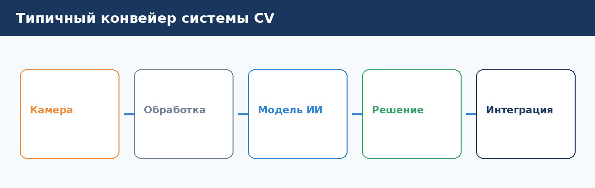
Блок 1: Источник изображения
- IP-камеры — офис, улица, склад;
- Промышленные камеры — высокая частота кадров, триггер по сенсору;
- 3D-камеры (depth) — объём, расстояние до объекта;
- Сканеры, мобильные устройства — полевые осмотры, аудит.
Критерии выбора: разрешение, FPS, интерфейс (GigE, USB), защита (IP67), синхронизация с линией.
Блок 2: Передача и хранение
Видеопоток идёт по сети (RTSP, ONVIF) или в edge-устройство рядом с камерой. Иногда кадры не хранят целиком — обрабатывают на лету и сохраняют только события (нарушение, брак).
Бизнес-аспект: хранение видео — расходы и комpliance (152-ФЗ, GDPR, корпоративные политики). Часто достаточно коротких клипов вокруг инцидента.
Блок 3: Обработка и inference
Inference — момент, когда модель «думает» над кадром. Варианты:
| Где считается | Плюсы | Минусы |
|---|---|---|
| Облако | Мощные GPU, лёгкое обновление | Задержка, зависимость от сети |
| Edge (на объекте) | Быстро, работает offline | Ограниченная мощность |
| Гибрид | Баланс | Сложнее архитектура |
Для производства с жёстким SLA на остановку линии чаще выбирают edge. Для аналитики офиса и «умного города» — облако или гибрид.
Блок 4: Бизнес-логика и интеграция
CV редко живёт изолированно. Сигналы уходят в:
- MES / SCADA — остановка линии;
- ERP / 1C — учёт;
- Service Desk — тикет на обслуживание;
- Мобильное приложение — push-уведомление охране;
- BI-дашборд — KPI по сменам.
Без интеграции вы получите «красивую демо-панель», но не изменение процесса.
Блок 5: Мониторинг и поддержка
Рабочая система требует:
- метрик качества (точность, ложные срабатывания) в динамике;
- алертов при падении камеры или росте ошибок;
- процедуры дообучения при смене продукта или освещения.
Типовые архитектуры
«Камера + коробка AI у линии»
Камера → edge-сервер → PLC / сигнал брака. Минимальная задержка, устойчивость к обрыву интернета.
«Централизованный видеосервер»
Много камер → VMS → CV-модуль в ЦОД → дашборды и интеграции. Удобно для офисов и ТРЦ.
«SaaS-платформа»
Камеры клиента подключаются к облачному сервису. Быстрый старт, подписка, меньше CapEx.
Вопросы для RFP / ТЗ
- Сколько камер и какой кадр в секунду нужен для решения?
- Допустимая задержка от события до действия?
- Куда должны уходить сигналы (конкретные системы)?
- Требования к хранению персональных данных?
- Кто владелец модели и данных для дообучения?
Краткий итог
Система CV — это не только «нейросеть», а цепочка от оптики до вашего бизнес-процесса. Слабое звено (камера, сеть, интеграция) обесценивает даже лучшую модель.
Данные, обучение и точность
Простыми словами: модель учится на примерах, как новый сотрудник. Чем лучше примеры и чётче правила — тем меньше ошибок на работе.
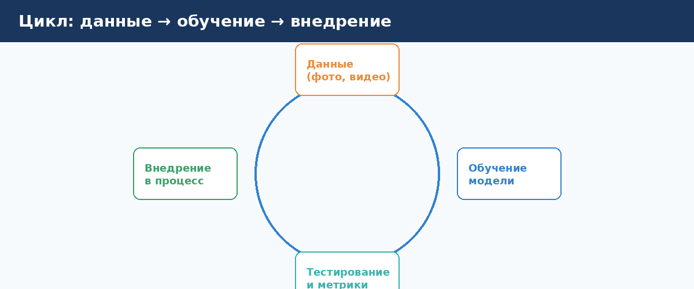
Роль данных
Данные — фото и видео с разметкой: «здесь дефект», «это каска», «этот текст — номер накладной №123».
Без качественных данных даже дорогая модель будет ошибаться. Типичные источники:
- архив камер на объекте;
- специальная съёмка под проект;
- синтетические изображения (3D-рендер) — дополнение, не всегда замена реальности;
- публичные датасеты — редко «из коробки» под ваш продукт.
Этапы создания CV-решения
- Постановка задачи — KPI, классы объектов, границы ответственности.
- Сбор и разметка — часто 60–80% бюджета пилота.
- Обучение модели — работа ML-инженеров или fine-tuning готовой модели.
- Валидация — тест на новых кадрах, не участвовавших в обучении.
- Пилот на площадке — реальные условия, смены, пыль, зима.
- Эксплуатация и дообучение — новые SKU, новая линия, смена поставщика камер.
Что такое «точность» для бизнеса
Технические метрики переводятся в деньги:
| Метрика | Смысл для руководителя |
|---|---|
| Precision (точность) | Из всех «брак» сколько реально брак? (мало ложных остановок) |
| Recall (полнота) | Из всего реального брака сколько поймали? (мало пропусков) |
| F1 / mAP | Баланс — обсуждается с технической командой |
| Latency | Уложились ли в время до остановки конвейера? |
Пример: recall 99% звучит отлично, но если линия останавливается 50 раз в смену из-за ложных тревог — операционные потери съедают выгоду.
Готовые модели vs кастом
| Подход | Когда подходит |
|---|---|
| Готовый API (лица, OCR, общие объекты) | Стандартные объекты, быстрый MVP |
| Pretrained + дообучение | Ваши детали похожи на типовые, мало классов |
| Полностью кастом | Уникальная продукция, строгие требования |
Для промышленного дефекта «царапина на зеркале X» почти всегда нужен кастом или сильное дообучение.
Сколько данных «достаточно»
Зависит от задачи и вариативности. Ориентиры для разговора с IT:
- классификация «норма/брак» — от сотен до тысяч снимков на класс;
- детекция — тысячи размеченных объектов;
- анomaly detection — много «нормы» + десятки/сотни примеров аномалий.
Важнее разнообразие: разное освещение, ракурсы, смены, пыль, скорость линии.
Человек в контуре (Human-in-the-loop)
На старте и при высоких рисках оставляют человека:
- CV помечает подозрительные случаи;
- оператор подтверждает или отклоняет;
- подтверждения идут обратно в дообучение.
Это снижает риск и ускоряет накопление качественной разметки.
Краткий итог
CV — про данные + процесс. Заложите в проект время на сбор примеров, согласование метрик и пилот. «Купить модель за неделю» без данных — маркeting, не внедрение.
Ограничения, риски и реалистичные ожидания
Простыми словами: компьютерное зрение — сильный помощник, но не всевидящий судья. У него есть «слепые зоны», как у человека после ночной смены.
Технические ограничения
Освещение и погода
Резкие тени, контровой свет, дождь на объективе, ночная съёмка без IR — частые причины падения качества. Решение: проектирование света, HDR-кamеры, IR-подсветка, выбор зоны кадра.
Окклюзия и перекрытия
Объект частично закрыт другим объектом, рукой, упаковкой. Модель может не увидеть или перепутать. Решение: несколько камер, трекинг, логика «несколько кадров подряд».
Новые объекты (out-of-distribution)
Модель обучена на прошлогодней линейке — появился новый цвет упаковки. Решение: процесс добавления классов, мониторинг drift.
Скорость линии
Размытие при высокой скорости конвейера. Решение: короткая выдержка, strobe-подсветка, камеры с global shutter.
Операционные риски
| Риск | Последствие | Митигация |
|---|---|---|
| Ложные срабатывания | Простои, alert fatigue | Настройка порогов, подтверждение вторым кадром |
| Пропуск дефекта | Рекламация, безопасность | Выборочный человеческий аудит, recall-метрики |
| Простой IT | Линия без контроля | Fallback-процедура, резервный режим |
| Зависимость от вендора | Lock-in | Контракт на данные и экспорт модели |
Юридические и этические риски
- Биометрия и лица — согласия, локальное хранение, ограничения по законодательству.
- Видеонаблюдение сотрудников — трудовое право, профсоюзы, прозрачная политика.
- Дискриминация — модель хуже работает на отдельных группах; нужен аудит fairness.
Подробнее — в главе про этику.
Когда CV не нужен
Иногда проще и дешевле:
- датчик присутствия вместо камеры в переговорной;
- весы / RFID вместо CV-подсчёта на конвейере;
- штрих-код вместо OCR на ровной этикетке.
CV оправдан, когда визуальная информация — единственный или самый дешёвый способ получить решение.
Как формулировать ожидания для стейкholdеров
Плохо: «AI будет видеть всё и никогда не ошибаться».
Хорошо: «Система поймает 95% дефектов типа A и B; ожидаем не более 3 ложных остановок в смену; оператор проверяет спорные случаи; через 6 месяцев пересмотрим пороги по факту».
Краткий итог
Успешные проекты CV честно описывают границы применимости и закладывают процесс, а не только алгоритм. Это повышает доверие бизнеса и снижает разочарование после пилота.
Компьютерное зрение в промышленности
Простыми словами: на заводе камера смотрит на детали и людей так же внимательно, как лучший контролёр, только без перерывов и отвлечений.
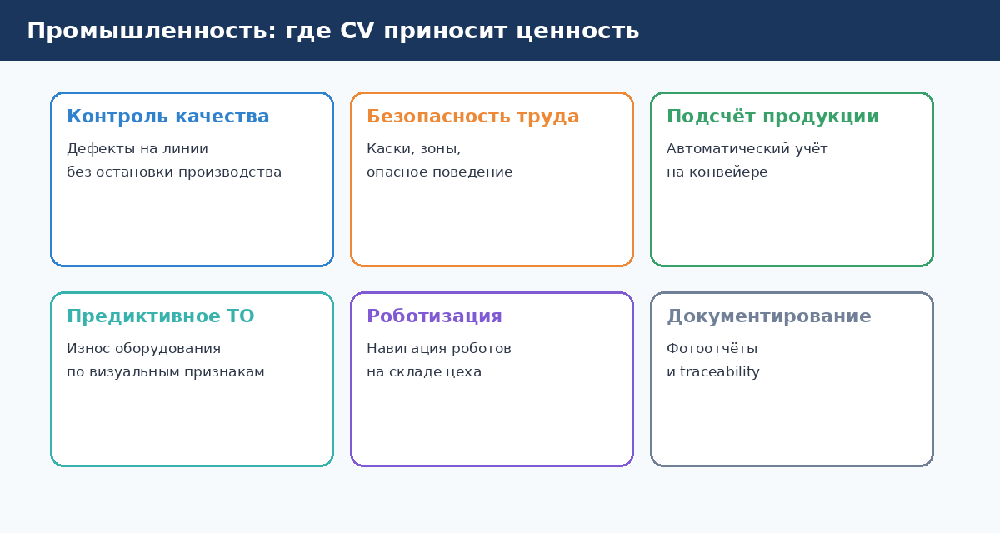
Контроль качества (Visual Inspection)
Задача: находить дефекты — царапины, сколы, включения, неправильная сборка.
Эффект:
- стабильное качество 24/7;
- меньше возвратов от клиентов;
- данные для анализа «где ломается процесс».
Нюансы: каждый новый SKU может требовать новых примеров; критичны освещение и синхронизация с линией.
Охрана труда и промышленная безопасность
Задача: каски, жилеты, очки, нахождение в опасной зоне, работа под краном без ограждения.
Эффект: снижение травматизма, доказательная база для расследований, культура безопасности.
Нюансы: согласование с профсоюзом и HR; избегать «карательного» использования без обучения.
Подсчёт и учёт продукции
Задача: сколько единиц прошло по конвейеру, сколько паллет на складе, заполненность контейнера.
Эффект: автоматическая сверка с ERP, меньше инвентаризационных расхождений.
Предиктивное обслуживание
Задача: по визуальным признакам (вибрация ремня, потёки масла, износ ножа) предсказать поломку.
Эффект: меньше внеплановых простоев, переход от календарного ТО к состоянию.
Роботизация и cobots
Задача: робот «видит» деталь, захват, orientation для сборки или паллетирования.
Эффект: гибкость линии при смене продукции (vs жёсткая механика).
Traceability и доказательная база
Задача: фото каждой партии с привязкой к серийному номеру.
Эффект: быстрый root cause при рекламации; compliance в pharma, automotive, food.
Экономика: как считать ROI
Пример упрощённого расчёта для QC:
- Было: 4 инспектора × смена × стоимость часа + % пропущенного брака × стоимость рекламации.
- Стало: CapEx/OpEx системы CV + 1 оператор на эскалации + остаточный брак.
Пилот на одной линии за 2–3 месяца даёт цифры для масштабирования.
Чек-лист «готов ли участок к CV»
- [ ] Есть повторяющийся визуальный дефект или риск?
- [ ] Камера может быть установлена стабильно?
- [ ] Есть архив «брак / норма» или можно снять?
- [ ] Понятен канал «остановить / маркировать / алерт»?
- [ ] Согласованы владельцы процесса (производство + IT + качество)?
Краткий итог
Промышленность — флагман CV: высокий ROI, измеримые метрики, понятная интеграция с MES. Начинайте с одной боли (дефект или безопасность), а не с «AI на весь завод».
Офисы и корпоративные пространства
Простыми словами: камеры в офисе помогают не «шпионить ради шпионства», а понимать, как используется пространство, и делать вход безопаснее и удобнее.
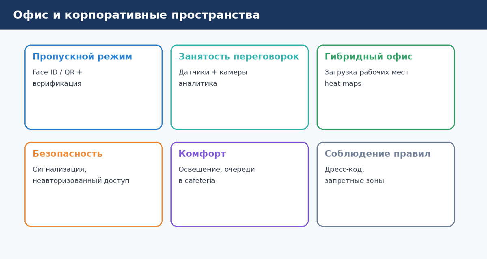
Пропускной режим и биометрия
Сценарий: сотрудник проходит через турникет — система распознаёт лицо (или лицо + бейдж), проверяет liveness (что это не фото).
Выгода: быстрый поток в час пик, меньше потери карт доступа, журнал событий.
Важно: согласие на обработку биометрии, альтернатива (PIN, карта), политика хранения.
Занятость переговорных и рабочих мест
Сценарий: датчики или камеры фиксируют «пусто / занято» без идентификации личности — только факт присутствия.
Выгода: бронирование через приложение с реальным статусом, меньше «занятых пустых» комнат.
Тренд гибридного офиса: heat maps — в какие дни перегружен open space, нужно ли перераспределить зоны.
Безопасность и охрана
Сценарий: незнакомец в серверной, дверь propped open, оставленная сумка в холле.
Выгода: оперативное реагирование, интеграция с СКУД и охраной.
Комфорт и сервисы
Сценарии: очередь в столовой → уведомление «лучше зайти через 10 минут»; контроль освещения по заполненности зоны.
Выгода: UX для сотрудников, данные для facility management.
Соблюдение политик (осторожно)
Дресс-код, курение в неположенном месте, доступ в зоны с NDA — технически возможно, но высокий reputational risk, если нет прозрачности и договорённостей.
Рекомендация: фокус на безопасность и ресурсы, не на микрокontrol.
Отличия от промышленности
| Фактор | Офис | Завод |
|---|---|---|
| Освещение | Мягкое, переменное | Часто жёсткое, стабильное |
| Приватность | Высокая чувствительность | Фокус на процессе |
| KPI | Комfort, security, utilization | Брак, простой, травмы |
| Интеграция | СКУД, booking, HR | MES, ERP |
Пилот в офисе: с чего начать
- Одна боль — например, ghost bookings переговорок.
- Privacy by design — анонимизация, минимум хранения, signage «ведётся видеоаналитика».
- Пилот 4–6 недель на одном этаже.
- Опрос сотрудников до и после.
Краткий итог
CV в офисе — про удобство и безопасность при уважении к приватности. Успех зависит от коммуникации с HR и legal не меньше, чем от качества алгоритма.
Улица, город и инфраструктура
Простыми словами: «умный город» — это когда камеры на улице помогают разгружать дороги, находить свободную парковку и быстрее реагировать на проблемы.
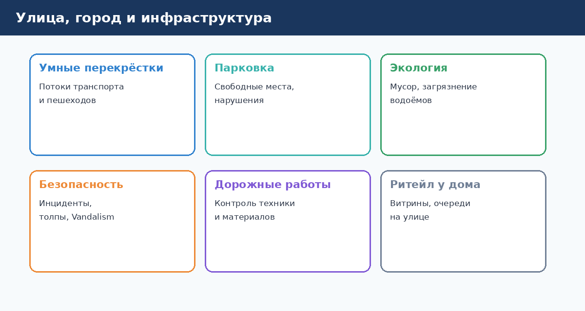
Транспорт и перекрёстки
Задачи: подсчёт потоков машин и пешеходов, адаптивные светофоры, детекция пробок и ДТП.
Эффект: меньше заторов, быстрее скорая и службы, данные для urban planning.
Сложности: погода, ночь, сезонность; интеграция с городскими IT-системами.
Парковка
Задачи: свободные места на уличной парковке, парковочные нарушения, оплата по номеру.
Эффект: меньше кругов в поиске места, рост собираемости штрафов/оплат.
Экология и содержание города
Задачи: переполненные урны, несанкционированные свалки, загрязнение водоёмов, состояние озеленения.
Эффект: таргетированный выезд бригад вместо обхода «по расписанию».
Общественная безопасность
Задачи: скопление толпы, оставленные предметы, дым/огонь, vandalism.
Эффект: профилактика инцидентов; важно — баланс с правами граждан и прозрачностью алгоритмов.
Строительство и дорожные работы
Задачи: контроль техники на площадке, соблюдение ограждений, прогресс работ по фото/видео.
Эффект: меньше простоев, доказательная база для подрядчиков.
Ритейл «у дома»
Задачи: очереди у входа, витрины, outdoor реклама (audience measurement).
Эффект: staffing, промо, compliance с brand book.
Модели закупки для municipality / девелопера
- CapEx — камеры + платформа на балансе;
- конcession — подрядчик инвестирует, монетизирует данные/сервис;
- гранты — пилоты «умного города» с KPI от Mинцифры/регионов.
Краткий итог
Городской CV — масштаб и политика. Технически задачи те же (детекция, подсчёт, OCR номеров), но критичны legal, гражданское доверие и межведомственная интegration.
Розничная торговля и e-commerce
Простыми словами: в магазине камера видит, что полка пустеет, а на кассе самообслуживания — что вы положили в корзину (или забыли пробить).
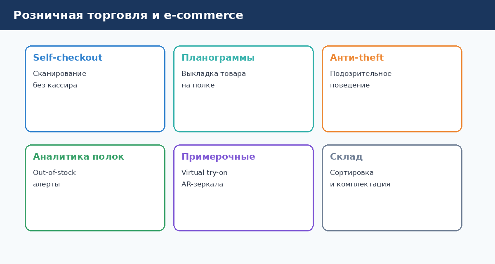
Аналитика полок (On-shelf availability)
Задача: пустые места, неправильная выкладка, ценники не на месте.
Эффект: меньше lost sales, автоматические задачи персоналу через приложение.
Форматы: стационарные камеры в aisle, роботы-сканеры ночью, мобильные обходы с планшетом.
Self-checkout и shrinkage
Задача: сверка товаров в зоне сканера с видео — «пропущенный скан».
Эффект: снижение потерь; осторожно с UX — ложные обвинения разрушают лояльность.
Очереди и staffing
Задача: длина очереди на кассах и в примерочных.
Эффект: открытие дополнительной кассы в peak, KPI для директора магазина.
Анти-theft (поведенческая аналитика)
Задача: паттерны «concealment», частые walk-out без оплаты.
Эффект: фокus LP на реальных рисках; требует этики и legal review.
Virtual try-on и AR
Задача: «примерить» одежду или makeup на экране.
Эффект: engagement онлайн и в флагманских магазинах, меньше возвратов при правильной калибровке.
Склад и dark store
Задача: picking verification — правильный SKU в заказ; damage при упаковке.
Эффект: точность same-day delivery, меньше компенсаций.
Метрики успеха для retail CV
| KPI | Описание |
|---|---|
| OSA | % времени товар доступен на полке |
| Shrink rate | Потери vs baseline |
| Queue time | Среднее время в очереди |
| Labor productivity | Задачи на час с/без CV-подсказок |
Краткий итог
Retail — один из самых коммерчески зрелых рынков CV. Начните с OSA или очередей: эффект виден в P&L магазина за недели, не годы.
Медицина и здравоохранение
Простыми словами: врач по-прежнему главный, но компьютер помогает быстрее заметить подозрительное пятно на снимке или что пациент упал в палате.
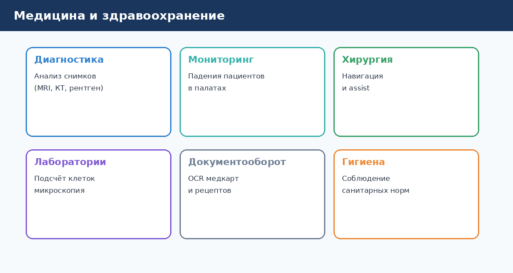
Анализ медицинских изображений
Задачи: подсказки на рентгене, КТ, МРТ, маммографии, сетчатке глаза.
Эффект: второе «мнение», triage срочных случаев, разгрузка radiologist в регионах с дефicit кадров.
Важно: CV — assistive, не замена врача; регистрация как медизделие (FDA, CE, Росздравнадзор) для кlinical use.
Мониторинг пациентов
Задачи: падение в палате, длительное отсутствие движения, выход из кровати после операции.
Эффект: быстрее реакция медсестёр, меньше осложнений.
Приватность: по возможности без записи лица — только pose / silhouette.
Хирургия и навигация
Задачи: overlay анатомии, контроль инструментов, подсчёт тамpon / инструментов.
Эффект: safety checklist в OR, training для резидентов.
Лаборатории и микроскопия
Задачи: подсчёт клеток, классификация патологий на smear.
Эффект: стандартизация, throughput в лабораториях.
Документооборот
Задачи: OCR бумажных направлений, рецептов, браслетов.
Эффект: меньше ошибок ввода, быстрее admission.
Санитарные нормы
Задачи: мытьё рук персоналом, наличие перчаток, чистота зон.
Эффект: infection control, аудит для аккредитации.
Барьеры внедрения
- Regulatory — сроки и стоимость сертификации;
- Integration — HL7, FHIR, PACS;
- Liability — кто отвечает за ошибку модели;
- Clinical validation — исследования на вашей популяции.
Краткий итог
Healthcare CV — высокая ценность и высокий барьер входа. Для бизнеса вне клиник (медстрахование, telehealth, wellness) возможны более лёгкие сценарии без статуса SaMD.
Транспорт и логистика
Простыми словами: на складе и в порту камера «видит» посылку и машину так же, как опытный кладовщик — только быстрее и без ошибок от усталости.
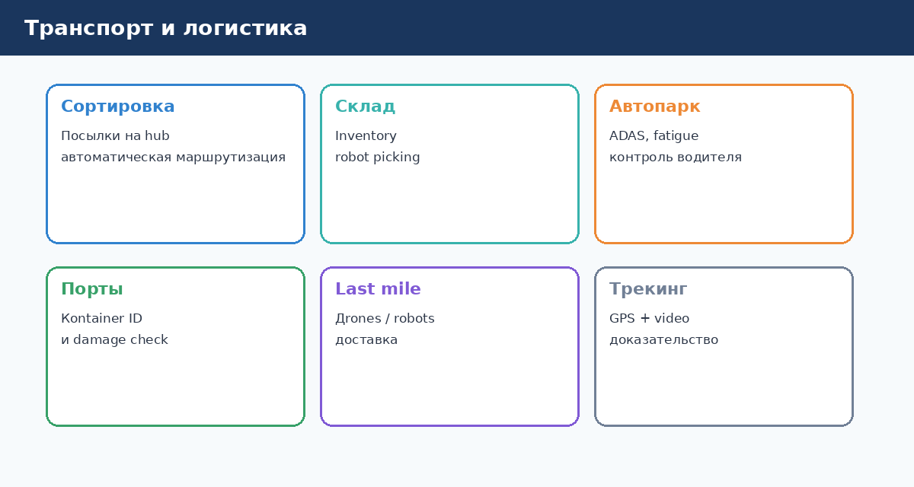
Сортировка посылок
Задача: чтение этикеток, определение размера/формы, маршрутизация на belt sorter.
Эффект: throughput hub'ов, меньше mis-sort, данные для SLA перевозчиков.
Технологии: OCR + barcode + 3D dimensioning.
Склад: inventory и picking
Задача: где паллета, пуст ли bin, правильно ли уложен товар роботом.
Эффект: cycle count без остановки склада, verification перед отгрузкой.
Автопарк и ADAS
Задача: контроль дистанции, полосы, усталости водителя (закрытые глаза, зевота).
Эффект: снижение аварийности, страховые бонусы, compliance.
Примечание: часть функций — regulatory (Euro NCAP, локальные нормы).
Порты и контейнеры
Задача: распознавание номера контейнера, damage inspection при приёмке.
Эффект: меньше споров между линиями и терминалом, быстрее turnaround судов.
Last mile
Задача: навигация delivery-robot / drone, подтверждение вручения (фото у двери).
Эффект: меньше «не получил заказ», доказательная база.
Трекинг и доказательная база
Задача: видео + GPS + timestamp при погрузке/разгрузке.
Эффект: арбитраж претензий B2B.
KPI логистического CV
- parcels per hour;
- mis-sort rate;
- damage claim rate;
- idle time на gate/inbound dock.
Краткий итог
Логистика — объём и скорость. CV окупается там, где ошибка стоит дорого (mis-sort premium посылки) или где ручной труд — bottleneck.
Безопасность и видеонаблюдение
Простыми словами: вместо сотни мониторов, которые никто не успевает смотреть, система сама подсказывает: «здесь что-то необычное — посмотри сюда».
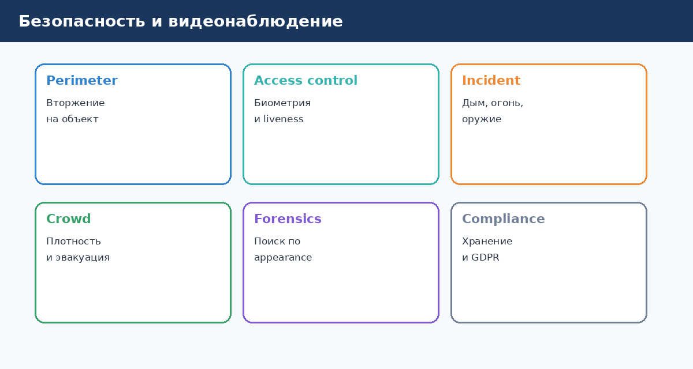
От реактивного архива к проактивным алертам
Классическое CCTV — запись «на потом». CV добавляет слой событий:
- пересечение линии периметра;
- человек в запретной зоне в нерабочее время;
- оставленный предмет > N минут;
- дым / огонь;
- скопление толпы.
Контроль доступа
Face + liveness на проходной, сопоставление с whitelist/blacklist, anti-tailgating (два человека на одного).
Интеграция: СКУД, HR (увольнение → автоматический ban).
Поиск и расследования (forensics)
Задача: «найти все кадры с красной курткой и рюкзаком» — attribute search по архиву.
Эффект: часы вместо дней при расследовании инцидента.
Эthics: ограничить круг пользователей, журналировать запросы.
Специализированные угрозы
Детекция оружия, агрессии, падения — высокий false positive; нужны процедуры подтверждения оператором.
Compliance
- сроки хранения видео;
- GDPR / 152-ФЗ — право на удаление, уведомления;
- export для суда — chain of custody.
Организационная модель
| Роль | Ответственность |
|---|---|
| Security ops | Реакция на алерты |
| IT | Камеры, сеть, VMS |
| Data/AI | Модели, качество |
| Legal | Политики, DPIA |
Краткий итог
CV в безопасности — фильтр внимания оператора, не замена службы. Успех = правильные SOP на каждый тип алерта + регулярный review ложных срабатываний.
Сельское хозяйство и AgriTech
Простыми словами: дрон или камера на тракторе смотрит на поле и говорит: «здесь сорняки», «здесь болеет растение», «здесь созрело».
Мониторинг посевов
Задачи: стресс растений (вода, болезнь, вредители), NDVI с камер и спектрометров, прогноз урожая.
Эффект: точечное внесение удобрений и СЗР, меньше потерь урожая.
Сорняки и precision spraying
Задача: сегментация сорняка → включение форсунки только на weed.
Эффект: экономия химии до 70–90% vs сплошная обработка.
Урожай и сортировка
Задача: зрелость плода, размер, дефекты на sorting line.
Эффект: premium цена за качество, меньше отходов.
Животноводство
Задачи: поведение стада, дистанция при доении, вес по silhouette, рождение телёнка.
Эффект: раннее лечение, welfare compliance.
Дроны vs стационарные камеры
| Источник | Плюсы | Минусы |
|---|---|---|
| Дрон | Охват поля, 3D | Погода, регulation полётов |
| Трактор / robot | Регулярность | Скорость, пыль |
| Столб на поле | Дешевле на малом участке | Один ракурс |
Сезонность и данные
Agri CV сильно зависит от фазы vegetative cycle — модель, обученная весной, может drift к осени. Нужен план дообучения по сезонам.
Краткий итог
AgriTech CV — растущий рынок с экологическим и экономическим эффектом. Пилот часто начинают с одного поля и одной культуры.
Как внедрить CV в компании: дорожная карта
Простыми словами: не покупайте «AI ради AI». Найдите боль, проверьте на маленьком участке, измерьте цифры — и только потом масштабируйте.
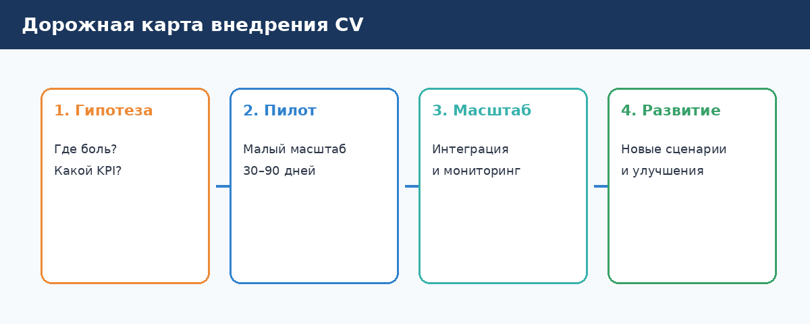
Фаза 1: Гипотеза и бизнес-кейс (2–4 недели)
Действия:
- workshop с производством / операциями / security;
- список болей, где зрение — ключевой сигнал;
- rough ROI: cost of problem × частота;
- проверка legal (лица, персональные данные).
Выход: one-pager с KPI пилота и владельцем.
Фаза 2: Feasibility и данные (4–8 недель)
Действия:
- audit камер и мест установки;
- сбор 200–500 сырых кадров «в полях»;
- экспресс-тест готовой модели или консультация ML-команды;
- go / no-go по достижимой точности.
Выход: техническое заключение «достижимо / не достижимо / нужны доработки».
Фаза 3: Пилот (30–90 дней)
Действия:
- разметка данных, обучение, интеграция с одним процессом;
- shadow mode (система советует, человек решает) → assisted mode → auto;
- еженедельный review метрик.
Выход: отчёт пилота с ROI факт/прогноз.
Фаза 4: Масштабирование
Действия:
- rollout на линии / филиалы;
- MLOps: мониторинг drift, версии моделей;
- обучение персонала и SOP;
- контракт поддержки с SLA.
Команда: внутренняя vs внешняя
| Модель | Когда |
|---|---|
| Integrator + vendor | Нет in-house ML, нужен быстрый результат |
| In-house + platform | Много площадок, чувствительные данные |
| Hybrid | Пилот с vendor, prod с internal team |
Бюджет: статьи
- камеры и монтаж;
- edge/cloud infra;
- разметка и ML (часто недооценивают);
- интеграция с ERP/MES;
- change management.
Типичные ошибки
- Нет владельца процесса — только IT.
- Пилот без baseline метрик.
- Игнорирование освещения и монтажа.
- Scope creep — «раз уж камера, давайте ещё 10 задач».
Краткий итог
Внедрение CV — управленческий проект с технологической начинкой. Дорожная карта «гипотеза → данные → пилот → масштаб» снижает риск и делает ROI видимым для CFO.
Этика, приватность и ответственное использование
Простыми словами: камера может многое увидеть — поэтому важно заранее договориться, что можно, а что нельзя, и защитить людей и их данные.
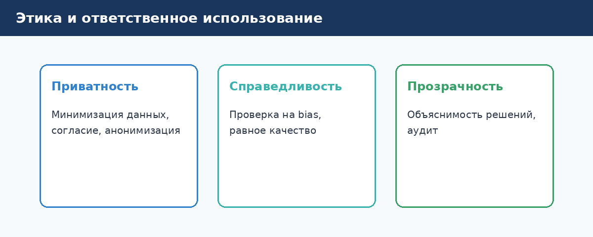
Принципы responsible CV
- Purpose limitation — снимаем и анализируем только для заявленной цели.
- Data minimization — не храним лица, если достаточно «человек в зоне».
- Transparency — таблички, политики, ответы на вопросы сотрудников.
- Accountability — владелец системы, audit log, процедура жалob.
- Human oversight — критичные решения не только алгоритм.
Биометрия и распознавание лиц
В РФ и EU действуют специальные режимы для биометрических данных:
- явное согласие или иное законное основание;
- локализация хранения (требования 152-ФЗ для ряда категорий);
- альтернативный способ доступа без биометрии;
- периодический пересмотр необходимости.
Для бизнеса: involve legal до закупки камер на проходной.
Видеонаблюдение сотрудников
- информирование и локальные акты;
- запрет скрытого наблюдения (кроме расследований по law);
- не использовать CV для скрытого рейтинга «продуктивности» без договорённостей;
- профсоюз / works council в ряde jurisdiction — обязательные консультации.
Bias и справедливость
Модели могут хуже работать на отдельных группах (тон кожи, пол, возраст, форма одежды). Практики:
- тест на representative выборке;
- мониторинг метрик по подгруппам;
- корректировка данных и порогов.
Безопасность данных
- шифрование потоков и архивов;
- RBAC — кто видит live и archive;
- retention policy — автоудаление;
- защита от deepfake на проходной (liveness, multimodal).
Коммуникация с сотрудниками
Плохо: «Поставили AI, не спрашивали».
Хорошо: «Кamеры в зоне X фиксируют только наличие каски, без записи лиц в архив дольше 24 ч; цель — безопасность; вот контакт для вопросов».
Краткий итог
Эthical CV — конкурентное преимущество: меньше судов, текучки и реputational crises. Legal и HR — равноправные stakeholders с первого дня проекта.
Будущее компьютерного зрения
Простыми словами: камеры станут ещё умнее — будут не только «видеть предмет», но и «понимать сцену» и разговаривать с вами об этом простым языком.
Мультимodal модели (Vision + Language)
Тренд: одна модель получает картинку и отвечает на вопросы: «Есть ли на полке наш бренд?», «Опиши инцident на парковке».
Для бизнеса: меньше кастомных моделей на каждую мелочь на старте; нужны guardrails и проверка галлюцинаций.
Foundation models для vision
DINO, SAM, CLIP-подобные модели — strong starting point для новых задач с малым числом примеров (few-shot).
Для бизнеса: быстрее пилоты, но всё равно нужна валидация на вашем домене.
Edge AI и efficient models
Модели сжимаются (quantization, distillation) — inference на дешёвых edge-box и даже на камере.
Для бизнеса: ниже TCO, меньше зависимость от облака.
3D и spatial AI
Depth, NeRF, digital twin — CV в связке с 3D-моделью завода или store.
Для бизнеса: симуляция изменений layout, robot path planning.
Регulation и стандарты
EU AI Act, отраслевые стандарты для medical devices, automotive — compliance by design.
Что делать компании уже сейчас
- Накопить качественный архив видео/фото процессов (с legal ok).
- Обучить 2–3 internal champions — не обязательно data scientists, но понимающих CV literacy.
- Выбрать 1–2 пилота с измеримым ROI.
- Заложить ethical framework до масштаба.
Краткий итог
Будущее CV — более универсальные модели + больше ответственности. Компании, которые начнут с понятных кейсов и честных метрик сегодня, легче интегрируют завтрашние breakthroughs.
Глоссарий: термины простым языком
Простыми словами: словарь, чтобы на совещании не кивать непонимающе, когда IT говорит «inference на edge».
А
Annotation (разметка) — когда человек или инструмент отмечает на фото «здесь дефект», «это человек».
Anomaly detection — поиск «не как обычно» без перечисления всех типов брака заранее.
Б
Bounding box — прямоугольник вокруг объекта на кадре.
В
Validation set — набор картинок для проверки модели, не использованных при обучении.
Д
Dataset (датасет) — коллекция изображений (и разметки) для обучения.
Detection (детекция) — найти объект и указать, где он на кадре.
И
Inference (инференс) — момент работы модели на новом кадре («предсказание»).
IoU — насколько рамка модели совпала с эталоном (техническая метрика).
К
Classification (классификация) — присвоить картинке или объекту класс (метку).
CNN — тип нейросети, historically dominant в CV (сверточная сеть).
M
mAP — усреднённая точность детекции по классам (для разговора с ML-командой).
Model (модель) — обученная программа, превращающая изображение в ответ.
O
OCR — распознавание текста на изображении.
Overfitting — модель «зазубрила» training, плохо работает на новых данных.
P
Precision — из всех «сигналов брак» сколько реально брак.
Preprocessing — подготовка кадра перед моделью.
R
Recall — из всего реального брака сколько система поймала.
ROI — return on investment, окупаемость.
S
Segmentation (сегментация) — выделение пикселей, принадлежащих объекту.
SDK / API — готовый интерфейс для вызова CV-функций из ваших систем.
T
Tracking (трекинг) — сопровождение объекта между кадрами видео.
Threshold (порог) — число уверенности, выше которого система «срабатывает».
E
Edge computing — вычисления на месте (у камеры, на заводе), а не в облаке.
Epoch — один проход обучения по всему training set (жаргон ML).
V
ViT (Vision Transformer) — современная архитектура CV на базе transformer.
VMS — Video Management System, платформа управления камерами.
Краткий итог
Держите этот глоссарий под рукой на встречах с интеграторами. Не стесняйтесь просить перевести любой новый термин на язык KPI вашего процесса.
Чек-лист для руководителя и итоги
Простыми словами: перед тем как сказать «да» проекту с камерами и AI, пробегитесь по этому списку — он сэкономит месяцы и бюджет.
Чек-лист перед стартом проекта CV
Бизнес
- [ ] Сформулирована конкретная боль (не «хотим AI»).
- [ ] Есть baseline — сколько стоит проблема сейчас.
- [ ] Назначен владелец процесса (не только IT).
- [ ] Определён один главный KPI пилота.
- [ ] Согласован критерий успеха пилота (go/no-go).
Данные и технология
- [ ] Проведён audit камер / возможности установки.
- [ ] Собраны сырые кадры в реальных условиях.
- [ ] Есть план разметки и бюджет на неё.
- [ ] Выбран edge vs cloud с учётом задержки и offline.
- [ ] Описана интegration — куда уходит сигнал.
Legal и HR
- [ ] Legal оценил персональные / биometric данные.
- [ ] Есть уведомления для сотрудников / посетителей.
- [ ] Определены сроки хранения видео и логов.
- [ ] Назначен DPO / контакт для вопросов.
Эксплуатация
- [ ] SOP на ложные тревоги и эскалацию.
- [ ] План мониторинга качества модели.
- [ ] Контракт поддержки и SLA.
- [ ] Fallback при простое системы.
Итоги книги
Вы прошли путь от определения компьютерного зрения до отраслевых сценариев и дорожной карты внедрения.
Главные мысли:
- CV превращает изображения в решения для процесса.
- Успех = данные + камеры + интegration + люди, не только «нейросеть».
- Начинайте с одного KPI и пилота.
- Ethics и legal — часть ROI, не препятствие.
- Технические детали — в Knowledge Book; здесь — язык для принятия решений.
Что делать дальше
- Выберите главу отрасли, близкую вашей компании (промышленность, офис, retail…).
- Заполните чек-лист с коллегами из IT, legal, operations.
- Запланируйте 2-недельный feasibility с сбором кадров.
- Обратитесь к техническим топикам книги знаний: Object Detection, Segmentation, Metric Learning — когда пилот перейдёт в фазу реализации.
Обратная связь
Это издание v1.0 Knowledge Book Business Edition. Предложения по улучшению — через ваш internal channel или issues репозитория knowledge-book.
Спасибо, что читали. Удачных и ответственных проектов с компьютерным зрением!
О руководстве
Это руководство подготовлено в рамках проекта Knowledge Book и предназначено для сотрудников, руководителей и специалистов, которые хотят понять возможности компьютерного зрения без погружения в программирование и математику.
Технические детали и углублённые материалы — в разделах knowledge-book/topics/ (Computer Vision, Object Detection и др.).
© Knowledge Book · 2026